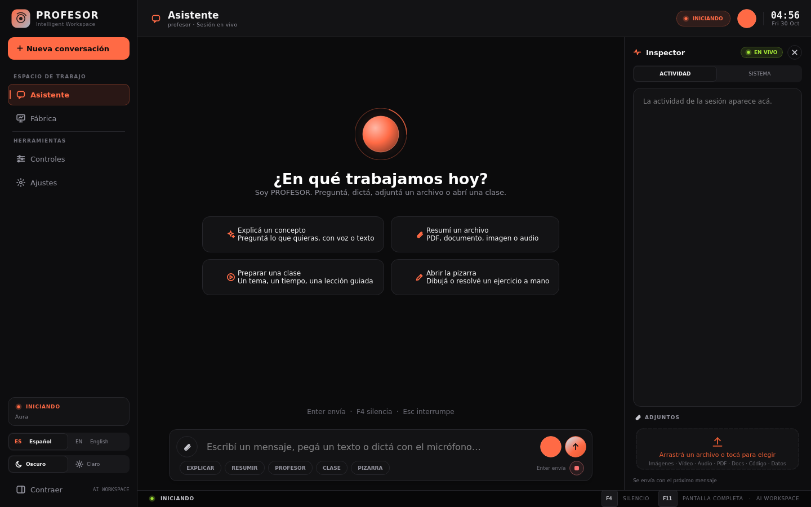
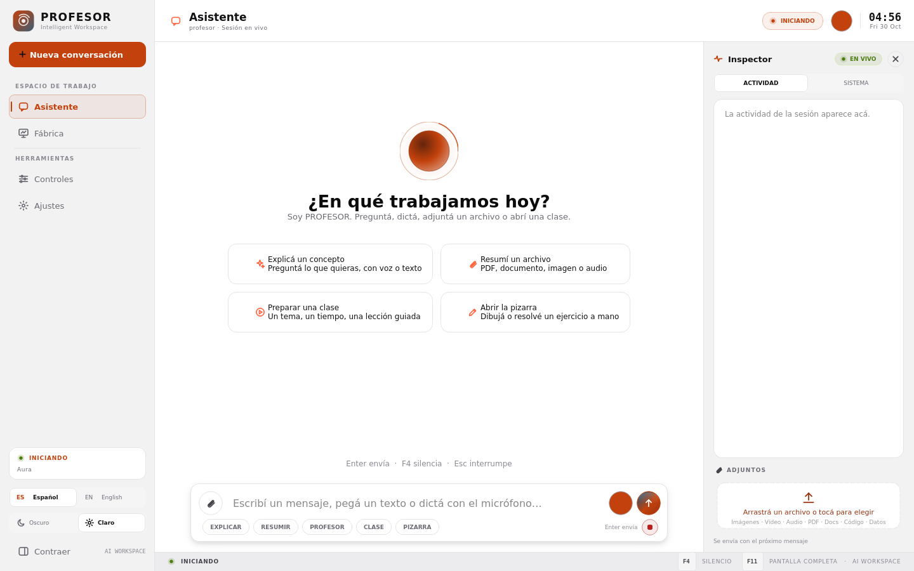
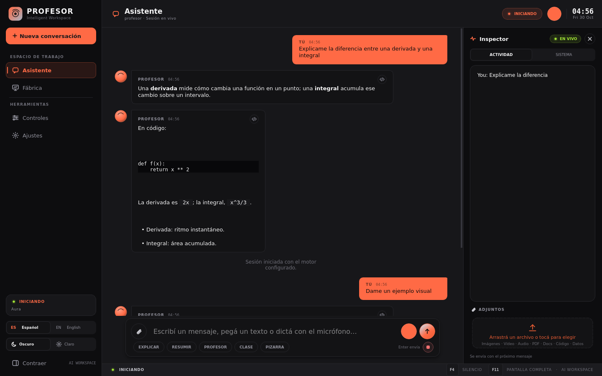
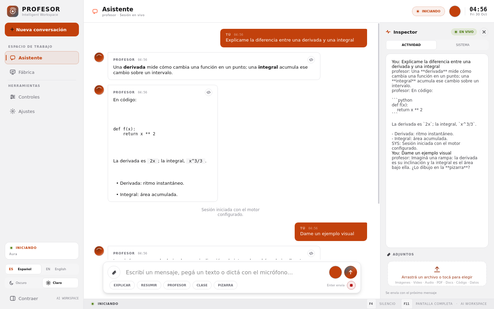
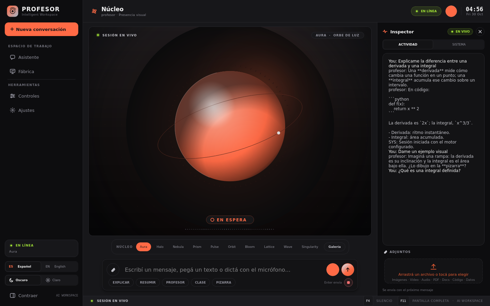

Nueva identidad del escritorio: grafito, un naranja de señal y lima para
“en vivo”. Superficies planas, filos de 1 px, esquinas de 4–14 px y
tipografía un punto más grande. Nada de degradados ni de dorado.

Oscuro · inicio. Barra lateral plana, cabecera de 1 px. El
naranja sólido queda para «Nueva conversación»; el destino activo es un bloque
teñido con su marca al margen.

Claro · inicio. “Papel”: blanco frío, tinta casi negra y el mismo
naranja para todo lo accionable.

Oscuro · conversación. Burbujas planas con esquina de 3 px en
el lado del emisor; la tuya es el único bloque relleno.

Claro · conversación. Mismo lenguaje con la paleta de papel.

Núcleo. El orbe toma el naranja y el cian de estado; el resto es
grafito.
PRI #FF6A45ACC #7DD3FCGREEN #A3E635PANEL #131315SIDEBAR #0D0D0FPRI claro #C2410C